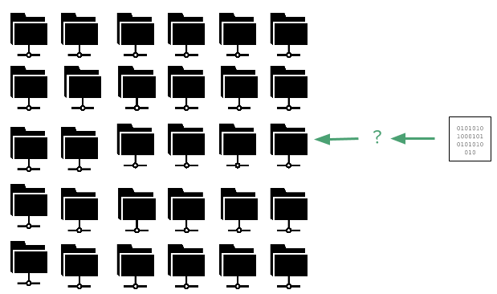
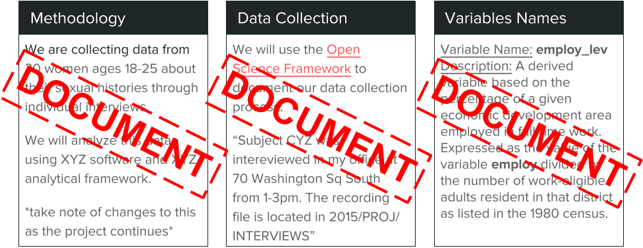
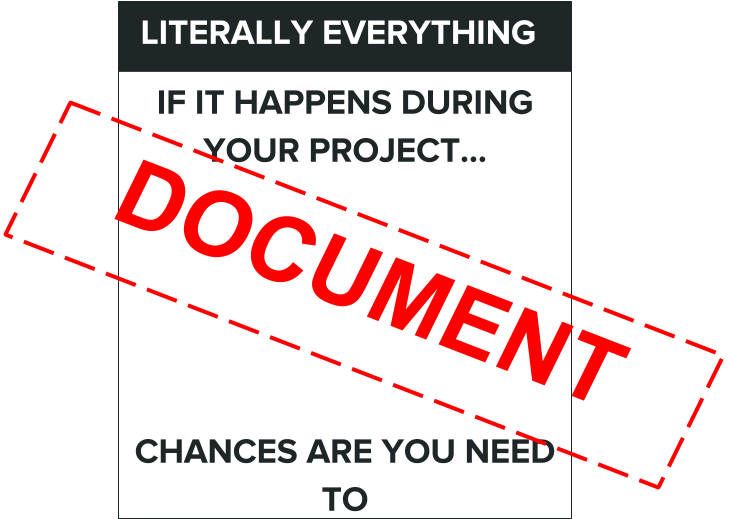
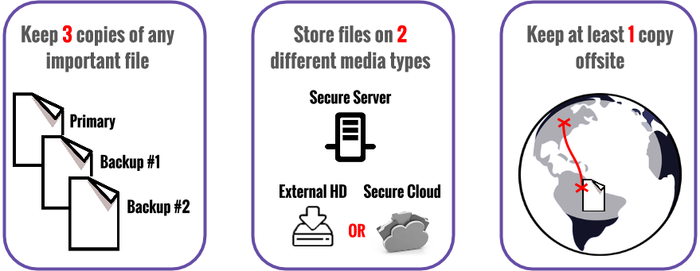
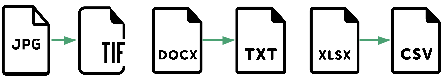
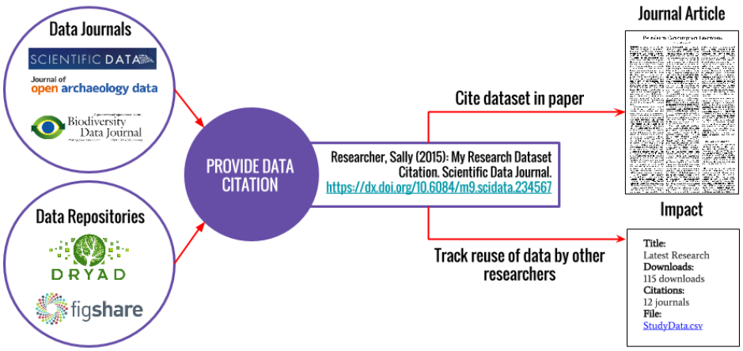

Introduction to
Research Data Management
Vicky Steeves & Nick Wolf | DATE

The Problem
Researchers work with a lot of data...
...but how should it be organized?
Disappearing Data

Human Error

The Solution
Research Data Management

Managing the way data is collected, processed, analyzed, preserved, and published for greater reuse by the community and the original researcher.
What is Data?
"the recorded factual material commonly accepted in the scientific community as necessary to validate research findings." -Federal Office of Management & Budget Circular A-110

Federal Regulations

High-Level View of RDM
| Data Type | Group Roles | Data Storage | Data Archiving |
|---|---|---|---|
| format of data to be generated | who is primarily responsible for carrying out RDM? Set group norms | where will you store your data and how will you backup your data? | how will you preserve and make your data available to others? |
Documentation
Documentation
Best Practices: Documentation with  the Open Science Framework
the Open Science Framework
- Wiki: document your lab procedures, standards, etc.
- Collaborators: add collaborators of various levels to different parts of your project
- Components: sub-projects to organize different parts of your research
- Version Control: upload files of the same name & OSF will track your versions!
- Add-Ons: use OSF to bring together tools you use | GitHub
- Registrations: when you have an unchanging version of your project, register it & get a DOI!
Best Practices: Documentation with  Jupyter Notebooks
Jupyter Notebooks
- Web Application
- in-browser code editing: syntax highlighting & indentation
- in-browser code execution: results attached to parent code
- display results in LaTex, HTML, SVG, & more
- Notebook
- a complete record of a session, interleaving code with text, maths, & objects
- can export to LaTex, PDF, slideshows, etc. or webpage
Basically, think to yourself:
if I wanted to use this data in 10 years, what would I need to pack with it to make it useful?
Keep all those things
Documenting Local Files

Documenting Local Files
| Bulk File Renaming | Generating READMEs |
|---|---|
| Concise with no special characters! DST_20151029_fIlEnAmIn$ vs 2015-10-29_DST_FileName Programs: Windows: Rename-It! & rename.bat Mac: NameChanger & readme_maker_MAC | A readme file is a .txt, .xml., or .html file that sits in a directory & explains the context and uses of each files in that same directory. Scripts: Windows: toHTML.bat, toCSV.bat, & toTXT.bat Mac: file_rename_mac |
Storage Rules!
NYU Storage Resources
| NYU Google Drive | NYU Box | |
|---|---|---|
| Intended use | Personal archive not including sensitive or secure data | Departmental & personal research with a focus on sensitive or secure data |
| Storage size | Unlimited | Unlimited |
| Sharing and user control | Yes | Yes |
| Versioning and file change tracking | Some | Yes |
Anonymizing Data
- Anonymizing data:
- Direct identifiers (name, DOB, SSN, address, id numbers, etc.)
- Indirect identifiers (variables in combination that enable identification)
- Solutions:
- Removal of identifying variables
- Binning values/top coding (i.e. hide unique outlier values or aggregate values)
- Disturbing (add random values to encoded value, retaining integrity of statistical accuracy)
Long Term Storage
Choose what you want to preserve/get to in the long term, but No matter WHAT, make sure you keep:
|
Put your data into an archival format!
|

Long Term Storage in Data Repositories
When you publish, you should make the underlying data available in a repository that issues DOIs! You then link that DOI in your "Supplementary Materials" section!
This means that anyone who wants to use your data must go to this repository, download it, and cite their use if they publish using it!
Advantages to Tracking Citations:
- Demonstrate to funders/promotion committees you & your data make big impacts in your field!
- they judge merit based on intellectual merit and wider impact
- tangible evidence to weigh against the cost of research
- Monitor usage of datasets!
- You can know what forms of data prep and data publication are most effective for sharing/open science!
- Uncover opportunities for collaboration amongst peers
Getting Credit for Your Data
RDM Overview
- DOCUMENT YOUR DATA
- Document file directory with a README/Table of Contents
- STORE YOUR DATA
- 3 different places | 2 different types of storage | 1 cloud backup
- ANONYMIZE YOUR DATA
- Bin | Disturb | Remove
- ARCHIVE YOUR DATA
- Deposit with a trusted repository
- GET CREDIT FROM YOUR DATA
- Put the DOI/citation for your data in your paper, and watch your H-Index soar!
Thank you! Questions?
Email us: victoria.steeves@nyu.edu & nicholas.wolf@nyu.edu
Learn more about RDM: guides.nyu.edu/data_management
Get this presentation: guides.nyu.edu/data_management/resources
Make an appointment: guides.nyu.edu/appointment